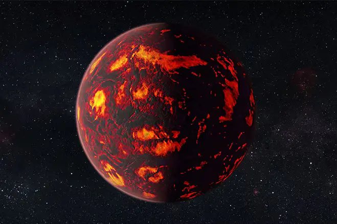

Eksoplanet Bumi Super Lautan Lava
55 Cancri e (dijuluki *Janssen*) adalah eksoplanet berkategori "Bumi Super" (*Super-Earth*) yang berorbit sangat dekat dengan bintang induknya, 55 Cancri A, berjarak sekitar 41 tahun cahaya dari Bumi di konstelasi Cancer. Memiliki periode revolusi yang sangat singkat—hanya sekitar 17,7 jam—planet ini terkunci secara pasang surut (*tidally locked*), menyebabkan satu sisinya selalu mengalami siang abadi dengan suhu ekstrem hingga lebih dari 2.000 °C yang mencairkan permukaannya menjadi lautan lava cair. Pengamatan Teleskop Luar Angkasa James Webb (JWST) mengindikasikan keberadaan atmosfer kaya karbon monoksida (CO) dan karbon dioksida (CO₂), sementara studi pemodelan teoritis menunjukkan interiornya kaya akan karbon yang terkompresi menjadi intan di bawah tekanan tinggi.